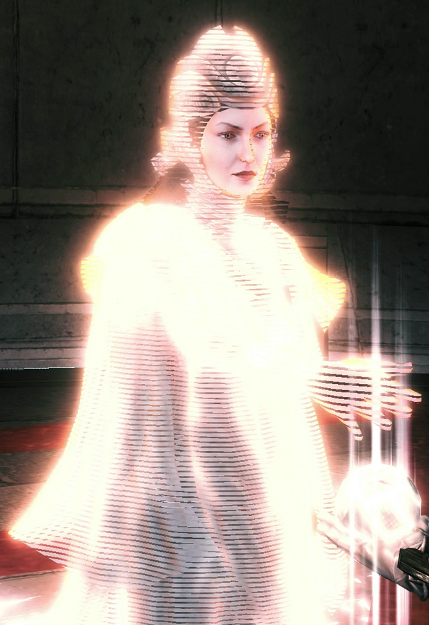
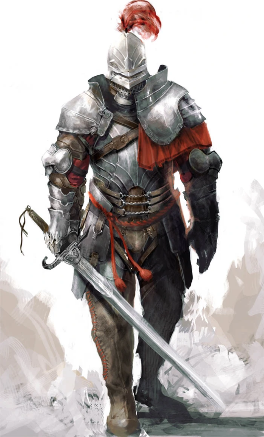

Introduction
La série de jeux vidéo Assassin's Creed est une série historique d'action-aventure et d'infiltration en monde ouvert, elle est développée et éditée par Ubisoft. Dans ces jeux, nous incarnons des personnages qui peuvent revivre la mémoire de leur ancêtres grâce à une machine appellé l'Animus, qui est capable de lire la mémoire génétique d'un sujet.
Dans les premiers jeux (Assassin's Creed 1, Assassin's Creed 2, Assassin's Creed Brotherhood, Assassin's Creed Revelation, et Assassin's Creed 3) nous incarnons Desmond Miles qui est un jeune Américain ayant des ancêtres faisant partie de l'ordre des Assassins.
Nous allons vous présenter l'histoire et le gameplay d'Assassin's Creed 2, ansi que des deux jeux qui lui sont associé : Assassin's Creed Brotherhood et Assassin's Creed Revelation. Ces trois jeux raconte l'histoire d'Ezio Auditore da Firenze.

Ezio - Assassin's Creed 2
Ezio - Assassin's Creed Brotherhood
Ezio - Assassin's Creed Revelation
L'histoire
Assassin's Creed 2 :
Ezio Auditore est un noble florentin né en 1459 à Florence, il est le fils de Giovanni Auditore, un riche banquier florentin ami de la famille Médicis, et Maria Auditore, une mécène. Il est le deuxième des quatre enfants du couple. Ses parents lui cachent la vie secrète d'Assassin de son père et il grandit donc dans l'insouciance. À l'âge de 17 ans, Ezio est un jeune adolescent qui vit à Florence, il est doué pour les acrobaties et est séducteur. Il mène la belle vie dont les seuls problèmes sont, son rivale Vieri Pazzi, le fils de Francesco de Pazzi, et le père de son amour, Cristina Vespucci, qui les a surpris dans le lit de sa fille.
De gauche à droite : Giovanni en assassin, Claudia, Maria, Giovanni, Petruccio, Ezio et Federico.
Un jour, sa famille est victime d'une conspiration, et est accusée de trahison. Son père Giovanni et ses deux frères, Federico et Petruccio, sont exécutés. Il ne lui reste plus que sa sœur Claudia et sa mère Maria qui sombre dans le mutisme à la suite du choc émotionnel, dû à l'arrestation et à l'exécution de son mari et de ses deux fils. Après avoir tué Uberto Alberti, l'homme qui a trahi sa famille et permis leur exécution, Ezio décide de mettre le reste de sa famille à l'abri chez son oncle, Mario Auditore, dans la Villa Auditore à Monteriggioni en Toscane, car désormais à Florence, tous ceux qui ont été proches de son père sont traqués et tués.
Une fois arrivé dans la forteresse, Mario révélera alors à Ezio que toute sa famille est issue d'un ordre ancien appelé les Assassins, et qui est en perpétuel guerre avec ses ennemis, les Templiers, qui sont responsables de la mort de son père et de ses frères. Ezio se lance alors dans une quête de vengeance à travers l'Italie du nord, entre la Toscane, Florence et Venise. Au fur et à mesure de sa quête, il se rend compte qu'une vérité plus grande que son objectif initial se cache derrière la grande conspiration. Il s'allie donc avec Laurent de Médicis pour le soutien politique, et reçoit l'aide de Leonardo da Vinci qui décode les pages du Codex d'Altaïr et améliore les armes d'Ezio. Il aidera ainsi Laurent de Médicis à mettre à jour la conjuration des Pazzi en en tuant tous les membres importants.
Ezio se rend ensuite à Venise avec l'aide de Leonardo, où il s'allie à la Guilde des voleurs, dirigé par La Volpe, pour déjouer les plans de Rodrigo Borgia, alias l'Espagnol, qui veut prendre le contrôle de la cité. Après avoir échoué à sauver le doge de Venise, Ezio traque les derniers Templiers se trouvant à Venise, sans toutefois parvenir à trouver l'Espagnol. Après des années d'attente, Ezio apprend qu'un artefact de Ceux-qui-étaient-là-avant, appelé la Pomme d'Éden, est à Chypre et doit être ramené à Venise. Il réussit à dérober l'artefact à Rodrigo avant de devenir, officiellement, un Assassin.
Léonardo jeune
À la suite d'un incident à Forlì lui ayant fait perdre la Pomme et après l'avoir retrouver en déjouant les plans de Savonarola, Ezio découvre l'existence d'un Sanctuaire grâce aux pages du Codex d'Altaïr et entreprend de le découvrir et d'en finir avec Rodrigo Borgia. Il pense d'abord à confier la Pomme sous la protection de Caterina Sforza, son alliée de Forlì, mais la ville est prise d'assaut par les frères Ludovico et Checco Orsi. Ezio parvient à repousser les forces des Orsi mais les frères Orsi parviennent tout de même à dérober la Pomme. Hors de la ville, Ezio tue les frères mais épuisé et blessé, s'effondre après avoir vu Girolamo Savonarola subtiliser la Pomme. Il revient ensuite en Toscane afin d'arrêter Savonarola à Florence, qui déclenche des émeutes La Pomme D'Édenau cours desquelles Cristina Vespucci et son mari sont tués.
En 1499, Ezio infiltre le Vatican pour retrouver le Sanctuaire que Rodrigo Borgia, devenu le pape Alexandre VI, essaie d'ouvrir. Après leur combat dont Ezio sort vainqueur, il choisit d'épargner Rodrigo Borgia. Ezio ouvre ensuite le Sanctuaire et écoute le message de Minerve, un être de Ceux-qui-étaient-là-avant, mais dont le véritable destinataire est Desmond Miles.

Rodrigo Borgia
Minerve
Assassin's Creed Brotherhood :
En sortant des sous-sols du Vatican, Ezio retrouve son oncle Mario. Ils fuient ensuite la ville avec la Pomme d'Eden.
En janvier 1500, ils rejoignent leur résidence de Monteriggioni. Ezio s'apprête à prendre du repos et raconte donc ce qu'il a vu à Rome à Mario, sa mère Maria, sa sœur Claudia, Niccolò Machiavelli et Caterina Sforza, avec qui il passe la nuit. Le lendemain, la ville est prise d'assaut par les forces de Cesare Borgia, qui tue Mario et vole la Pomme. Ezio tente de défendre la ville le temps que les habitants fuient, mais il est blessé. Malgré cela, il part rejoindre Machiavelli à Rome, avant de s'effondrer de son cheval sur la route. Ezio, sauvé par un mystérieux homme est amené à Rome.
Il rejoint ensuite Machiavelli, qui lui explique que la cité se trouve sous le contrôle total des Borgia. Ezio enfile à nouveau sa tenue d'Assassin pour affronter les forces armées de Cesare. Avec l'aide de ses alliés Assassins, venus à Rome pour combattre, Ezio forme une armée de résistants rebelle au régime militaire des Borgia, en les initiant aux rites des Assassins.
Caterina Sforza
Il retrouve également Leonardo Da Vinci, contraint par Cesare de construire des armes modernes, qu'Ezio doit détruire pour affaiblir l'influence des Borgia et permettre la reconstruction de la ville. Grâce à l'aide de tous ses alliés, il parvient à tuer les plus puissants alliés de Cesare Borgia, qui a comme seule option finale d'utiliser la Pomme d'Éden.
Au Château Saint-Ange, Ezio surprend une violente dispute entre Cesare et son père, Rodrigo Borgia, ce dernier ayant dissimulé la Pomme. Cesare le tue en lui enfonçant une pomme empoisonnée dans la bouche, après qu'il l'ai lui-même croqué. Ezio apprend de Lucrezia Borgia la cachette de la Pomme, s'en empare et, grâce à elle, parvient à disperser les dernières forces de Cesare, qui est finalement arrêté en Niccolò Machiavelli1503.
Ezio voit cependant une partie de son avenir à travers la Pomme, dans lequel Cesare à réussi à s'échapper et à reformer une armée. Ezio reprend donc la route, et retrouve Cesare en 1507, dans la ville de Viana, mise à feu et à sang par l'armée de Cesare. Ezio le poursuit et l'affronte sur les murailles d'une citadelle. Il gagne le duel, mais Cesare refuse de mourir de la lame secrète de l'Assassin, qui le précipite donc du haut des murs.
Cesare Borgia
Assassin's Creed Revelation :
Ezio Auditore est maintenant âgé de 52 ans et est au terme de sa quête d'Assassin. Il recherche les secrets du grand maître assassin Altaïr Ibn La-Ahad se situant dans la bibliothèque de la forteresse de Masyaf. Il y découvre l'entrée d'une pièce secrète mais surtout un groupe de soldats Templiers, qui opère dans cette région sous couvert de l'ancien empire Byzantin, mais cherchant eux aussi les clés de la bibliothèque.
Ezio apprend que les autres clés se trouvent à Constantinople, alors capitale de l'Empire ottoman, où elles ont été cachées par Niccolò Polo et s'y rend donc. Les emplacements des clés sont encodés dans des textes, eux-mêmes dissimulés dans les monuments de la ville, et afin de déchiffrer les écrits dde Niccolò, Ezio fait appel à Sofia Sartor, une libraire italienne avec qui il entame une relation amoureuse. Ezio découvre aussi que les clés renferment des souvenirs d'Altaïr, qui aident le maître Assassin à décider quel sera son avenir et celui de son ordre.
Ezio doit également reprendre Constantinople tombée aux mains des Byzantins avec l'aide de Yusuf Tazim, le chef local des Assassins. Ils se retrouvent ainsi impliqués dans le conflit entre le Prince Ahmet et son frère Selim, tous deux désireux de s'emparer du sultanat. Ezio y fait aussi la connaissance d'un jeune étudiant, Suleiman, en réalité fils de Selim et prince Ottoman qui Altaïr Ibn La-Ahadsoupçonne un complot des Byzantins.
En effet, Ezio découvre que Manuel Palaiologos est en train de lever une armée avec l'aide des Templiers pour renverser le pouvoir et restaurer l'Empire byzantin. Les deux hommes s'affrontent dans le repaire de Palaiologos, dans les montagnes de la Cappadoce. Là, Ezio découvre que le véritable chef de l'opération est Ahmet, l'oncle de Suleiman, qui souhaite atteindre lui aussi la bibliothèque afin d'utiliser les connaissances qui y sont contenues pour instaurer l'ordre idéal.
Yusuf Tazim
De retour à Constantinople Ezio part défier Ahmet, qui a tué Yusuf et pris Sofia en otage. Après un assaut sur l'arsenal de la ville, Ezio et Ahmet conviennent d'un échange : les clés de Masyaf contre la vie de Sofia. Ezio est donc contraint de donner les clefs à Ahmet mais celui-ci veut faire pendre Sofia, qu'Ezio sauve in-extremis. Ezio le poursuit, et ils entament une course de diligence, qui se termine par l'arrivée du nouveau sultan Selim qui s'empresse de précipiter du haut d'une falaise son propre frère. Selim ordonne ensuite à Ezio de quitter la ville avec Sofia et de ne plus revenir, laissant la vie sauve à un homme que Suleiman tient en grande estime.
Dans sa quête des clés, Ezio découvre que celles-ci cachent des souvenirs d'Altaïr Ibn La-Ahad, prenant place avant et après les événements du premier jeu. Après la mort d'Al Mualim, Altaïr a pris possession de la Pomme d’Éden pour l'étudier puis a pris la tête de l'Ordre des Assassins, malgré la rancœur d'Abbas, un autre Assassin qui hait Altaïr. Quand ce dernier part, avec sa femme Maria Thorpe et leurs fils Darim, repousser l'invasion mongole, Abbas le renverse et fait tuer le plus jeune fils d'Altaïr avant de le bannir. Par vengeance, Altaïr tente de tuer Abbas mais Maria s'interpose et se fait tuer. Altaïr n'a plus d'autre choix que l'exil avec son fils aîné Darim.
Son exil durera 20 ans, durant lesquels Abbas sombre dans la paranoïa et la réclusion, entraînant ainsi la mise à mal de l'Ordre. Au retour d'Altaïr, celui-ci est acclamé et reçoit le soutien des Assassins, il tue Abbas et reprend le contrôle de Masyaf. Il aura Maria Thorpedeux nouveaux apprentis, les frères Polo, à qui il confiera son codex, et les cinq clés permettant d'ouvrir sa bibliothèque.
Ezio et Sofia partent donc pour Masyaf où ils ouvrent la bibliothèque d'Altaïr, mais celle-ci ne contient aucun livre, aucune révélation, seule réside au centre du sanctuaire des assassins, la dépouille d'Altaïr, mort de vieillesse et tenant une dernière clé. L'ultime souvenir d'Altaïr montre son fils Darim, ce dernier venant de comprendre pourquoi son père a fait construire une bibliothèque sans y déposer un seul livre lui fait ses adieux avant de quitter le château de Masyaf assiégé par les Mongols. Altaïr s'enferme dans la pièce avec la Pomme d’Éden, s'assoie, enregistre ses dernières pensées et meurt, attendant un futur Assassin afin de lui léguer le secret de sa vie.
Face à cette nouvelle Pomme, Ezio décide de la laisser dans le sanctuaire et a enfin sa révélation. Tout comme Altaïr, il n'est qu'un messager à travers le temps, il s'adresse alors directement à Desmond, qu'il sait présent à cet instant et lui délivre un message venu depuis l'aube de l'humanité, tout en lui demandant de donner un sens à tous ces sacrifices.
Sofia Sartor
Assassin's Creed Embers :
En 1524, Ezio Auditore s'est retiré dans une villa dans les environs de Florence, loin de son passé de Maître Assassin. Il partage son quotidien entre l'écriture de ses mémoires avec sa femme, Sofia Sartor, et la culture de la vigne. Cependant, une femme Assassin, Shao Jun, venue de l'Asie fait appel à la sagesse du maître, son ordre étant en danger dans son pays. Ezio refuse catégoriquement, sous prétexte que cette partie de sa vie est derrière lui.
Cependant, lors d'un tour à Florence, Ezio raconte à Shao Jun où son père et ses frères ont été condamnés à mort et comme il se réjouit que l'atmosphère de l'endroit ait changé. Sur le chemin du retour, ils se font attaquer dans une ruelle, par un homme à la solde de l'empereur chinois, avant de prendre la fuite. Une fois rentré, Ezio envoie Sofia et ses enfants, Marcello et Flavia, chez Machiavelli afin de les protéger d'éventuelles représailles.
La nuit venue, Ezio explique les motivations que Shao Jun doit avoir afin de rétablir son ordre et celles qu'elle doit éviter, en se fiant à son expérience avec les Borgia. Juste après, ils se font attaquer par d'autres mercenaires qui sont finalement vaincus. Le lendemain, avant son départ, Jun reçoit d'Ezio une boite qu'il lui dit d'ouvrir seulement si elle est désespérée, Shao Junpuis, elle part quand des gardes florentins arrivent au sujet de l'affrontement d'hier soir.
Plus tard, Ezio finit d'écrire sa lettre, destinée à Sofia sur son expérience de la vie, avant que cette dernière lui demande s'il veut l'accompagner à Florence avec ses enfants pour une course. Une fois en ville, Ezio, épuisé, s'assoit sur un banc, sous la recommandation de Sofia, le temps qu'elle fasse ses courses. Un peu après, un jeune homme s'assoie près du sexagénaire, reprochant à Florence certains points, Ezio lui répondant que ce n'est peut-être pas Florence le problème. Lors d'une crise de toux d'Ezio, le jeune homme lui prend la main et lui dit de se reposer avant de s'en aller. Dans un ultime souffle, Ezio regarde sa famille, avant de mourir devant ces derniers et les citoyens aux alentours, à l'âge de 65 ans.
Le gameplay
Assassin's Creed 2 :
Le joueur contrôle Desmond Miles, qui utilise l'Animus afin d'incarner un ancêtre de sa mémoire génétique, autrement dit revivre la mémoire de son ancêtre. Dans Assassin's Creed II, Brotherhood, et Revelation, Desmond revit les mémoires de son ancêtre Ezio Auditore da Firenze. Au cour des jeux, on revient de temps en temps dans le présent afin de suivre l'histoire de Desmond. Dans cet opus, les développeurs ont considérablement amélioré le gameplay du jeu précédent.
Le premier Assassin's Creed avait beaucoup été critiqué pour son aspect répétitif et monotone. Les développeurs ont écouté ces mécontentements, et ont promis un jeu plus varié. Déjà, l'ancienne structure de mission où on devait faire des investigations avant chaque assassinat a été abandonnée, les développeurs voulant plus se rapprocher de Grand Theft Auto. Il y a une centaine de missions narratives, et une autre centaine de missions secondaires que l'on peut accomplir n'importe quand (ces missions peuvent se trouver dans des cages de pigeons voyageurs par exemple). Il y a cependant toujours de grands assassinats.
Desmond Miles
Le nombre de types de mission a également augmenté : on en avait environ 6 ou 7 dans le premier, il y a environ 15 désormais. Les types de mission « passives » comme l'espionnage ou le vol ont disparu au profit de choses plus actives, telles que des courses ou des corrections à infliger. Les quêtes optionnelles sont toujours présentes, les objets à récupérer étant cependant plus variés : des plumes pour obtenir des bonus, mais aussi des statuettes, ainsi que des trésors.
Les techniques d'assassinat et les techniques de combat dans le premier opus étaient plutôt limitées, elles ont donc été modifiés afin d'apporter plus de diversité dans ces phases. On peut assassiner depuis un rebord, une botte de foin, un banc, ou un puits. L'assassinat aérien est possible depuis une altitude plus élevée et de manière plus facile que dans l'épisode précédent.
En combat à mains nues, Ezio est meilleur qu'Altaïr, il peut donner des coups de tête, de pied et de genou alors que son ancêtre ne donnait que des coups de poing. En combat, Ezio peut donner plus de coups, mais il peut aussi désarmer son ennemi et retourner son arme contre ce dernier. Il peut apprendre d'autres techniques spéciales de ce genre pour certaines armes spéciales. Après le combat, il peut porter les cadavres, ce qui n'est pas sans rappeler Splinter Cell (jeu d'infiltration). Aussi, le jeu offre une palette d'environ 30 armes différentes. On peut également acheter des bombes fumigènes qui permettent de s'échapper rapidement quand les ennemis deviennent trop nombreux.
La diversité des ennemis contrôlés par l'IA à également été améliorés, il y a plus d'ennemis différents, avec chacun une façon de penser différente. Dans ces ennemis, on retrouve les soldats basiques ainsi que les archers. Du côté des nouveaux ennemis, il y a les soldats agiles, armés de dagues et pratiquant le parkour tout comme le héros, les brutes, qui sont lourdement armés, bien protégés par une épaisse armure, et pouvant manier une épée très lourde, et enfin les traqueurs, qui manient des armes longues comme les hallebardes ou les piques, qui sont extrêmement méfiants et qui pourraient traquer Ezio jusque dans ses cachettes.

Basique
Archer
Agile
Brute
Traqueur
En termes de mouvements, Ezio est plus agile qu'Altaïr, il peut effectuer un saut depuis un rebord pour atteindre des endroits qui auraient été inaccessibles autrement ou pour grimper plus vite, il peut courir sur les poutres, il peut nager et plonger, l'eau lui servant même de cachette pour échapper aux poursuivants. Le système de santé est toujours liée à la synchronisation ADN entre Desmond et son ancêtre mais la régénération automatique ne se fait pas pour plus d'un losange (unité) de santé, et Ezio doit consulter un médecin de rue pour qu'il le soigne, ou lui acheter des remèdes pour qu'il puisse se soigner où il veut.
Il y a un système de vêtement pour le personnage principal (Altaïr portait toujours la même chose et d'ailleurs, on peut débloquer l'armure maître Assassin noire qu'Altaïr a laissé), des tailleurs sont présents pour pouvoir personnaliser la couleur de nos vêtements, ou acheter des sacoches de différentes tailles pour pouvoir porter plus de médicaments par exemple. On peut également acheter ou réparer des armures pour différentes parties de son corps (épaule, poitrine, pieds...), effectivement les ennemis peuvent casser notre armure, réduisant ainsi la barre de santé maximale d'Ezio. Ces armures ont également des classes de qualité, plus la qualité est meilleur, plus la résistance l'est aussi. Une meilleur résistance de l'armure, nous permet d'augmenter la barre de santé maximale d'Ezio.
Comme dans le premier opus, la population est un élément important du jeu. Celui-ci présente un nouveau système de notoriété qui fait varier la manière dont les soldats et les habitants considèrent le héros. Dans une ville, au fur et à mesure qu'Ezio commet des assassinats, sa notoriété augmente, entraînant la suspicion des passants à son égard. Les soldats le rechercheront activement. Pour diminuer cette notoriété et revenir à un état incognito, il faut assassiner des témoins (dignitaires), payer des pots-de-vin aux crieurs publics, ou arracher les avis de recherche régulièrement placardés.
Il est fréquent que les citoyens se déplacent en groupe, et il est alors possible pour Ezio de s'y mêler pour se dissimuler, et tromper la vigilance des gardes (alors qu'Altaïr savait seulement se faire passer pour un érudit en adoptant leur démarche). Ezio peut voler l'argent de n'importe quel passant (dans le premier opus, on ne pouvait voler que des couteaux et des documents pour les missions) en le frôlant dans une marche rapide. Il y a un système économique, qui permet à Ezio de s'acheter des armes, armures, remèdes, des teintures pour les vêtements et autres équipements. Effectuer des missions est un autre moyen de récolter de l'argent. On peut également fouiller les cadavres.
Pour distraire les gardes ou ameuter la foule afin de ralentir ses poursuivants, Ezio a la possibilité de jeter quelques florins sur sa route, les passants s'attroupant toujours rapidement pour les ramasser. On trouve aussi de nombreux groupes de voleurs à la tire, mercenaires et prostituées, auxquels Ezio peut faire appel pour combattre ou détourner l'attention des gardes, tandis que les messagers de Borgia ne demandent qu'à être interceptés pour se faire détrousser.
Le jeu inclut plusieurs villes et régions connues d'Italie comme Florence, Venise, Rome (seulement le Vatican), la campagne Toscane, San Gimignano, Monteriggioni, Forlì et la Romagne. Les grandes villes sont séparés par des campagnes, centrées sur des petites villes ou des villages remplis de missions. On peut les traverser à cheval, mais il y a d'autres moyens de locomotion comme le chariot qui permet de voyager rapidement entre chaque zone. À Venise et dans les marécages de la Romagne, on peut naviguer sur des gondoles.
Il y a des passages secrets disséminés un peu partout dans le jeu, et qui mènent à des niveaux de plates-formes semblables à Prince of Persia. Ces quêtes sont secondaires excepté le tombeau d'assassin de Florence, car il fait partie de la trame narrative.
Le système d'évasion est cette fois similaire à GTA IV, c'est-à-dire qu'il faut quitter une certaine zone de recherche indiquée sur la carte pour redevenir anonyme, ou alors rester caché pendant un certain temps.
L'Animus est cette fois doté d'une base de données nous donnant des informations sur des personnages ou lieux clés. Par exemple, lorsqu'on s'approche d'un monument célèbre comme l'église Santa Maria Novella, on peut connaître son histoire.
Ezio bénéficie de l'aide de plusieurs amis qu'il se fera au cours de sa quête. Le premier et le plus proche est Léonardo da Vinci. Il est l'ingénieur personnel du héros, il lui fournit des gadgets confectionnés à partir des plans du codex d'Altaïr. Il lui fera profiter de ses inventions telles que la machine volante (à l'état de dessin dans la réalité). Durant cette phase dans le jeu on doit passer au-dessus des flammes pour gagner en vitesse et en altitude. Il peut également donner des coups de pied à ses ennemis au passage.
Ezio qui s'apprête à tester la machine volante de Léonardo
Léonardo réparera d'abord, puis améliorera plusieurs fois la lame secrète d'Ezio en y ajoutant une deuxième lame (à l'autre bras), des gants d'escalade, des fléchettes empoisonnées et un pistolet. Celui-ci peut contenir 6 balles, mais sa faible précision fait qu'Ezio doit attendre un moment avant de bien viser. L'arme tue en une balle. L'assassin peut utiliser la lame empoisonnée seulement quand il est anonyme et il peut piquer sa victime sans qu'elle ne s'en aperçoive. Il faut un certain temps avant que le venin prenne effet, mais quand il commence à agir, la victime est Pistolet de poignet d'Ezioprise d'une folie en faisant tournoyer son arme en s'attaquant aux gens autour de lui avant de mourir.
À Venise, Ezio s'allie avec une guilde de voleurs, qui lui apprennent certaines techniques de déplacement. Ezio bénéficie du soutien de diverses guildes et factions à travers leurs chefs, leurs interventions remplacent celles des groupes de citoyens du premier opus.
Par exemple, il peut demander à des pickpockets de la guilde des Voleurs d'attirer l'attention des gardes, ou encore il peut engager des mercenaires pour qu'ils combattent avec lui ou à sa place. Grâce à son charme, il peut être aidé par les courtisanes qui peuvent le cacher en se rassemblant autour de lui (contrairement aux érudits dans le premier opus, c'est Ezio qui dirige le groupe) et peuvent attirer l'attention des gardes.
Les voleurs sont très agiles et peuvent suivre l'Assassin dans ses acrobaties, contrairement aux courtisanes et aux mercenaires. Ces services nécessiteront quand même un salaire et les courtisanes peuvent délaisser Ezio pour des soldats.
Voleur
Mercenaire
Courtisanes
Assassin's Creed Brotherhood :
Le gameplay du jeu reprend celui de son prédécesseur, le joueur contrôle le personnage d'Ezio Auditore, qui maîtrise l'art du déplacement, lui offrant la possibilité de se déplacer aussi bien dans les rues que sur les toits des bâtiments. La seule innovation sur cet aspect du jeu est l'apparition d'un nouveau système de poulie et de palan, qui tracte Ezio directement en haut d'un édifice, servant aussi bien lors de missions que pour de simples déplacements.
Les développeurs ont changé le système de combat dans ce nouvel épisode, le basant plus vers une stratégie offensive, contrairement aux opus précédents, et plus fluide. Il est ainsi possible de tuer un ennemi à coup d'épée puis lui tirer dans la tête avec le pistolet. De nombreux combos sont également incorporés, permettant de joindre différentes armes. Les combats de cheval à cheval sont plus développés que dans Assassin's Creed II. Ezio est également armé d'une nouvelle arme, une arbalète.
Ezio doit diriger la confrérie des Assassins, où il peut recruter et Arbalète d'Ezio
entraîner de jeunes assassins parmi les citoyens rebelles au régime des Borgia pour l'aider lors des missions ou des affrontements qu'il exécute, ou les envoyer en mission dans toute l'Europe pour les faire progresser. Néanmoins, il faut absolument éviter qu'ils ne meurent, le cas échéant, ils n'en reviendront pas.
L'évolution de ces apprentis est régie par un système de niveau, à la manière d'un jeu de rôle ou RPG, permettant de les améliorer pour les rendre plus efficaces. Il faut d'abord les libérer de leurs agresseurs pour qu'ils acceptent de suivre Ezio. Certains peuvent être formés au combat à distance, là où d'autres seront plus puissants au corps à corps par exemple.
De nouveaux effets pendant les combats font leurs apparitions tels qu'un zoom, un ralenti et des angles de caméras plus dynamiques afin d'immerger le joueur au maximum. Ezio doit également contribuer à l'essor de Rome, en tuant les capitaines de la garde à la solde des Borgia puis en incendiant les tours Borgia afin de libérer les quartiers de Rome et lui rendre sa beauté d'antan. En effet, lorsqu'une tour est détruite, le quartier est libéré de l'emprise des Borgia et se reconstruit peu à peu. La population aussi change, les bandits et voleurs laisseront place à des marchands et échoppes en tout genre, débloquant de nouvelles armes et pièces d'équipement. Ezio peut, en plus de rénover les étals des marchands, payer la restauration des monuments de la Rome antique et des aqueducs.
De nouvelles inventions, créées par Leonardo, le fidèle ami d'Ezio, sont implantées comme Parachutel'ancêtre du parachute. Forcé à devenir concepteur de machines de guerres pour les Borgia, Leonardo charge Ezio de détruire ses inventions afin d'empêcher Cesare de conquérir l'Italie. D'autre part, les missions principales du jeu peuvent être relancées à tout moment, ce qui n'était pas le cas du précèdent volet, ceci afin d'augmenter la synchronisation entre Desmond et Ezio. Les lieux secrets font leur retour, constituant les tanières d'une secte appelée les Adeptes de Romulus, financée par le Vatican.
Tour Borgia
Assassin's Creed Revelation :
Les différentes innovations apparues dans Brotherhood, comme les alliés, les bombes et le système de combat, seront améliorées. De nouvelles bombes font leur apparition, on pourra les conféctionner nous même en recherchant les ingrédients nécessaire dans les différents lieux, permettant ainsi de personnaliser nos bombes et notre gameplay.
Bombe collante
Bombe à impact
Bombe à mèche
Bombe à fils
La vision d'aigle a également évolué chez Ezio, lui permettant d'avoir une vision étendue du comportement des ennemis, de sorte qu'on pourra prévoir certains des mouvements des adversaires ou repérer un traître dans une foule.
On retrouve aussi la gestion des Assassins, qui disposera notamment d'un système de classe. Ezio dispose également d'un nouvel accessoire, un crochet qui lui permet de grimper plus haut, s'accrocher aux cordes pour circuler plus rapidement (comme une tyrolienne), ou faire une esquive au crochet.
Lame crochet
Ezio utilisant une tyrolienne